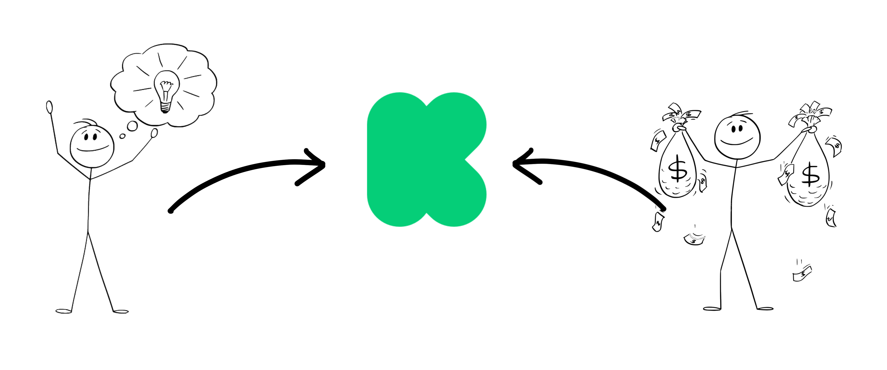

CROWDed: How Effective is
?
Created by: Taylor Kruse, Yao Yu, Lucy Ding
What is Kickstarter?
Kickstarter is a crowdfunding platform where a person with an idea for a product shares their idea and people that like it support it with money! Some of the most successful products from Kickstarter include the Pebble smartwatches, the Coolest Cooler, and the Four Secret Novels by Brandon Sanderson.
What products are on Kickstarter?
There are 15 main categories of projects on Kickstarter: Art, Comics, Crafts, Dance, Design, Fashion, Film & Video, Food, Games, Journalism, Music, Photography, Publishing, Technology, and Theater. However, there are also many subcategories within each main category, which total up to 160 unique subcategories! You can see all 160 of these in the bubble chart above - each subcategory is colored by its main category and sized by the number of projects in that subcategory. You may notice that Product Design and Tabletop Games are two of the most popular subcategories on Kickstarter. If you click on the Product Design, you can see the top funded projects in that subcategory - The Wyrmwood Modular Gaming Table: Coffee & Dining Models!
From 2020 to 2022, over 3 billion dollars have been donated on Kickstarter:
Over the past 3 years, the amount of money donated on Kickstarter has grown to over 3 billion United States Dollars. With that amount of money, you could theroetically buy companies such as Kim Kardashian's Skims, BlockFi, or Calendly (these are all valued around $3 Billion!).
Percent of Goal Reached
What if there were only 100 Kickstarter campaigns? Here, we have sorted all available projects by what percent of their goal they reached, and then seperated them into 100 bins. The color of each represents the average percent of goal pledged for each bin. Each square represents 710 projects.
As you can see, around 7/10 projects on Kickstarter do not get fully funded, 4/10 don't get above 10%!
Hover over each square to get more demographics for each bin!
About The Data
This Dataset was collected by Web Robots, a web crawler platform based in Lithuania. We aggregated the datasets containing information from 2020 to 2022 and removed duplicated Kickstarter camapigns for this proejct. You can find the raw datasets here.